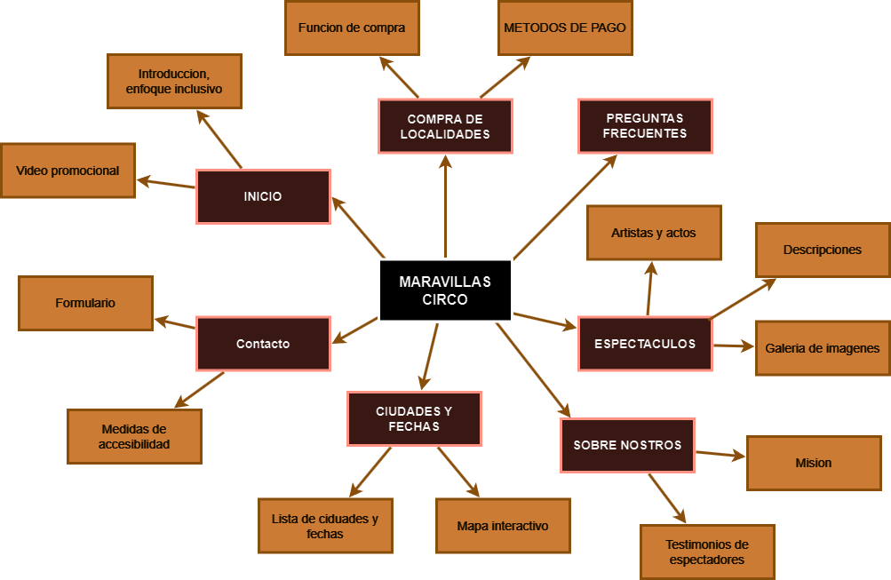

Tipografía
Navegación (Bebas Nue): Elegida por su claridad y legibilidad.
Contenido Principal (Rum Raisin): Elegida para dar un estilo completamente distinto al texto de la navegacion, siendo esta mas animada y 'festiva', para empatizar con la alegría que un circo representa.
Paleta de Colores
La paleta de colores del Circo Maravillas está inspirada en la temática tradicional del circo. Utilizamos los siguientes colores:
#410202
#CCA352
#FFFFFF
#000000
El tono bordo / rojo oscuro representa la pasión y emoción, la adrenalina y el asombro del show. El amarillo opaco muestra energía y optimismo. Por último, el blanco y negro resaltan la claridad y contrastes.
Icono y Logotipo
El icono y logotipo del Circo Maravillas simbolizan la unión entre tradición y modernidad, capturando la esencia mágica del espectáculo.
Mapa del Sitio
